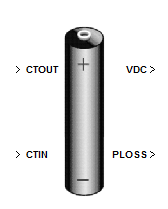
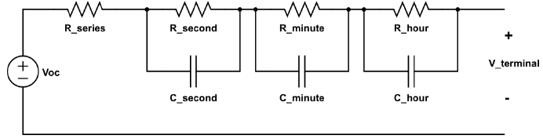

Battery
Description

The battery is the source of DC power in the aircraft electrical system. This section deals with the implementation of a lithium-ion battery, its mathematical model and the component inputs and outputs. In the following model, battery parameters are determined from laboratory tests on a sample lithium-ion battery (Panasonic CGR18650A). The model is generic and can be used to implement a wide range of batteries, including Li-ion, NiMH and lead-acid batteries. However, the battery circuit model parameters have to be estimated using a battery testing procedure (Kroeze and Krein, 2008).
Mathematical Model
The mathematical model described in this section is used to implement a lithium-ion battery. The battery capacity is a function of the charging/discharging rates i(t), temperature T(t) and cycle number ncycle and a rate factor f(i(t)) which is a function of current. The rate factor is used to account for undesired side reactions with increase in current magnitude. The dynamic capacity of the battery represented by its state of charge (SOC), is a function of the abovementioned factors and given by the following expression.


Fig. 5.50Electrical equivalent circuit of the batter model
The battery is modeled using the notion of multiple scale time constants, each at the level of seconds, minutes and hours. In the electrical equivalent circuit, each time constant can be modeled as a resistance-capacitance combination, as shown in Fig. 1. Measurements of the circuit parameters are found using a battery testing apparatus and recording the test sequences and data corresponding to open circuit voltage (Voc) and terminal voltage (Vt) versus SOC at room temperature. Each parameter (resistance and capacitance) in the model shown in Fig. 1, is a nonlinear function of SOC. For a practically useable model, each parameter is represented as a polynomial function of the SOC up to sixth order given as

The coefficients A0-A6 are obtained by a best-fit polynomial expression on the experimentally determined data points. From the equivalent circuit, the battery terminal voltage can be calculated as follows.

where I refers to the series current flowing in the circuit. The various resistance-capacitance combinations (Rs-Cs, Rm-Cm, Rh-Ch) refer to the time constants corresponding to the second, minute and hour time scales.
Battery Mask

Fig. 5.52. Mask inouts to the battery model
The battery model requires the following mask input values.
- Number of cells in each module* - Determines the series voltage of the entire string
- Number of modules* - Determines the number of parallel battery modules, each module consisting of its string
- Initial State Of Charge - Nominal initialization done between 0.9-1.0 (Range: 0-1).
*These values can be changed even during the course of simulation
Component Inputs and Outputs
A high-level block diagram with inputs and outputs to the model are shown in Fig. 2. The internal blocks indicate the sequence of steps executed to compute the battery dc bus voltage output. Also, the total power loss in the battery pack is computed as the sum of power dissipated in various resistors of the electrical equivalent circuit. The net charge/discharge detection block determines whether the net effect is charging or discharging, depending on the difference between the magnitudes of charging and discharging currents. This information along with the current flowing in the circuit is used to compute the dynamic SOC, which enables the calculation of the terminal voltage using (5.3.19). A single cell lithium-ion battery can provide a nominal dc voltage of 3.81 V. By connecting a number of cells in series, a required dc bus voltage can be realized. Connection of parallel modules enables to increase the current capacity of the battery module.

Fig. 5.51. High-level block diagram of the battery model
| Input | Units | Description |
|---|---|---|
CTOUT |
Ampere | Discharging current magnitude |
CTIN |
Ampere | Charging current magnitude |
| Output | Units | Description |
|---|---|---|
| VDC | Volt | Voltage output of the battery module consisting of series and parallel cells |
PLOSS |
Watt | Power lost in the battery due to its internal resistances |